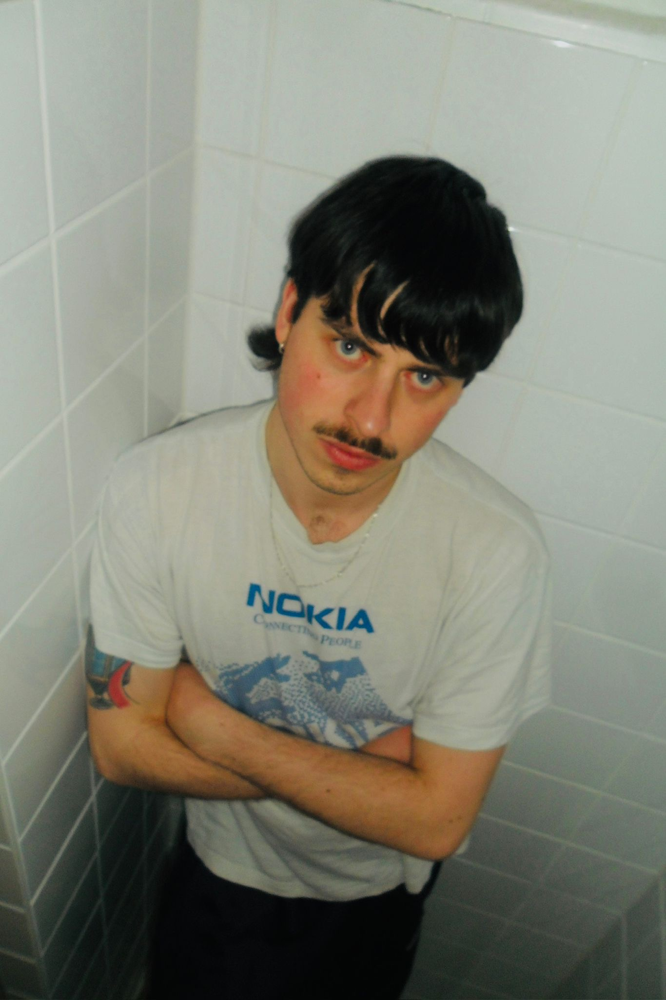
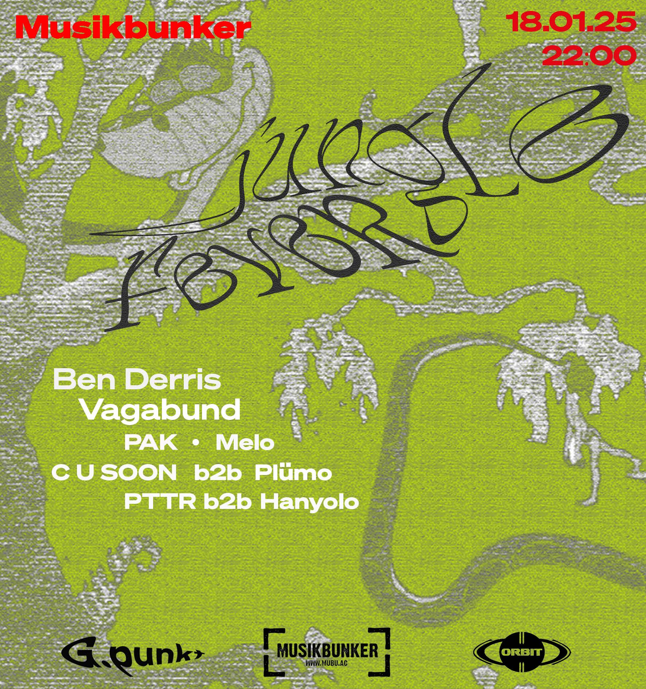
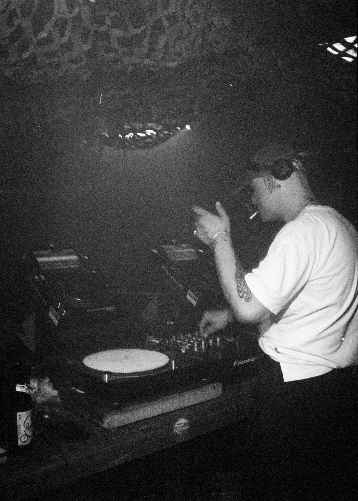
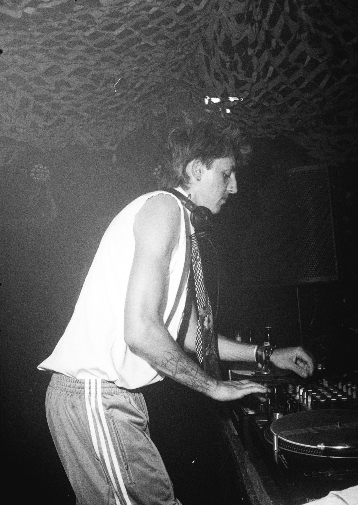
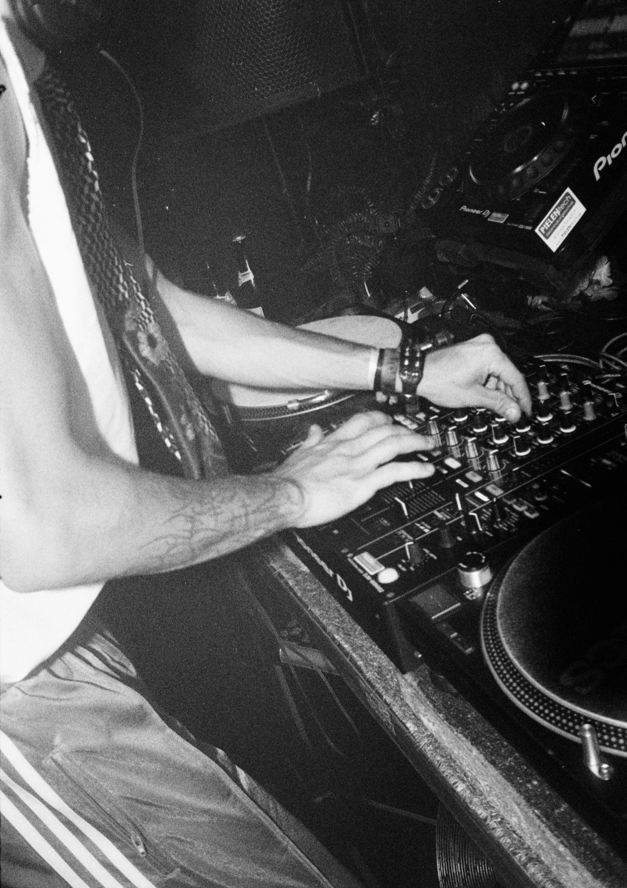
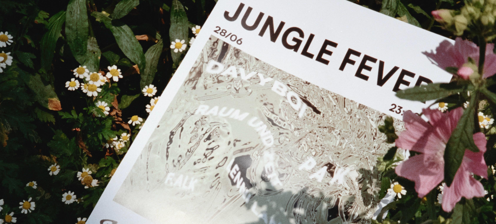
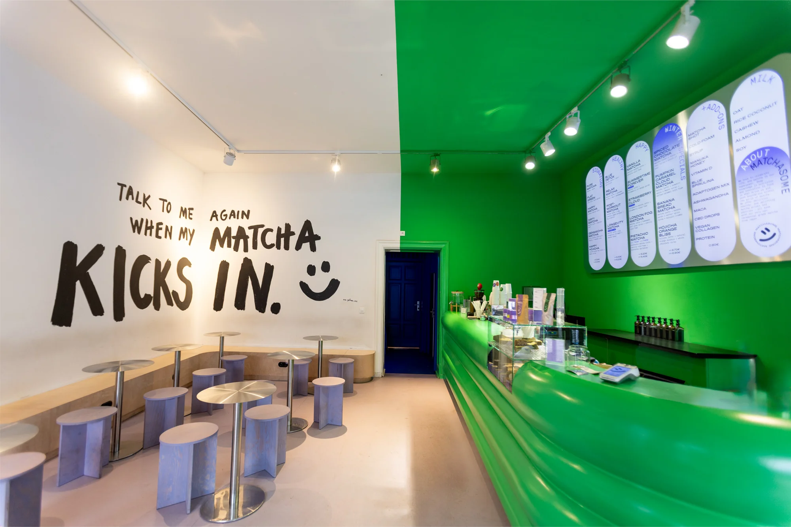

NIKLAS
MAUBACH
MAUBACH
Ich bin in Aachen aufgewachsen, lebe in Berlin und bewege mich in den
Schnittstellen von Subkultur, digitaler Ästhetik und Markensprache.
Ich denke konzeptionell, handle hands-on — und bringe Ideen lieber zum Leben, als sie nur zu beschreiben.
01 — G.Punkt Kollektiv
Aachen
Kultur schaffen,
nicht nur
konsumieren.
nicht nur
konsumieren.
G.Punkt ist das Kollektiv, das ich 2023 in Aachen mitgegründet habe —
aus dem Gefühl heraus, dass unserer Generation dort ein Nachtleben fehlte,
das wirklich etwas sagt. Kein Plug-and-Play, sondern echte Kuratorik:
Bühnendesign, Plakatgestaltung, Booking von DJs aus Berlin, Köln und
München, Social-Media-Posts — alles aus einer Hand und mit klarer Haltung.
Aachen hat keine Szene geschenkt. Also haben wir eine gebaut. Für alle, die genauso müde waren vom immer Gleichen — und genauso hungrig auf etwas Eigenes.
Aachen hat keine Szene geschenkt. Also haben wir eine gebaut. Für alle, die genauso müde waren vom immer Gleichen — und genauso hungrig auf etwas Eigenes.
Bühnenbild
Instagram Posts


Die Nacht




02 — Matchasome × BOLD
Aktuell

03 — OTTO Gourmet
B2B E-Mail Marketing
Jedes Produkt hat
eine Geschichte —
die macht es erst
zu etwas Besonderem.
eine Geschichte —
die macht es erst
zu etwas Besonderem.
Bei OTTO Gourmet habe ich gelernt, dass emotionales Marketing nicht
bedeutet, laut zu sein. Es bedeutet, genau hinzusehen: Jede Rinderrasse,
jede Farm, jede:r Züchter:in hat eine eigene Geschichte — und erst wenn man
diese Geschichte versteht und vermittelt, wird ein Produkt zu mehr als
einem Preis pro Kilo. Als Werkstudent im B2B-Marketing habe ich
Newsletter-Kampagnen für gehobene Gastronom:innen entwickelt und im
B2C-Praktikum Produktbeschreibungen und Website-Copy verantwortet.
Darling Downs F1 Wagyu
Herkunft als Qualitätsversprechen — Australien, 330 Tage Getreide-Diät, unberührte Weiden.
Westerberger Fullblood Wagyu
Der Mensch hinter dem Produkt — Franz Kirchner, Bayern, Leidenschaft als Argument.
04 — Doctolib
Community Management
Eine Community
braucht eine
Stimme — und
jemanden, der:die zuhört.
braucht eine
Stimme — und
jemanden, der:die zuhört.
Bei Doctolib habe ich im Rahmen eines Praktikums die deutschsprachige
Fachcommunity betreut — eine Plattform für medizinisches Fachpersonal.
Dazu gehörte das Moderieren von Diskussionen, das Beantworten von Anfragen
und das Erstellen von redaktionellen Beiträgen, die Einblicke in das
Unternehmen und seine Teams gaben. Ziel war es, die Community lebendig
zu halten und den Mitglied:innen das Gefühl zu geben, gehört zu werden.
Inside Doctolib: Produkt-Support
Einblick in den Arbeitsalltag des Support-Teams — Community-Artikel für die Doctolib-Fachcommunity.
Inside Doctolib: Product-Design-Team
Vorstellung des Design-Teams — redaktioneller Beitrag zur Stärkung der Community-Bindung.